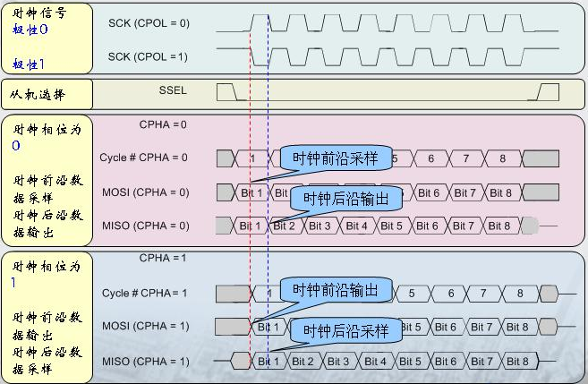

SPI¶
软件基础¶
在设备树中每一个spi节点对应一个SPI控制器(一般情况下软件将bus和控制器配置成如下对应关系)
spi0 <==> bus 0
spi1 <==> bus 1
spi2 <==> bus 2
其中每个SPI控制器上片选数有一个或多个,具体看芯片
SPI0_CSN0
SPI0_CSN1
SPI1_CSN0
SPI2_CSN0
SPI2_CSN1
SPI工作方式¶
SPI以主从方式工作,这种模式通常有一个主设备和一个或多个从设备,需要至少4根线
CS 片选信号
SCLK 时钟信号
MOSI 主设备数据输出,从设备数据输入
MISO 主设备数据输入,从设备数据输出
Linux内核用CPOL和CPHA的组合来表示当前SPI的四种工作模式
CPOL＝0,CPHA＝0 SPI_MODE_0
CPOL＝0,CPHA＝1 SPI_MODE_1
CPOL＝1,CPHA＝0 SPI_MODE_2
CPOL＝1,CPHA＝1 SPI_MODE_3
CPOL:表示时钟信号的初始电平的状态,０为低电平,１为高电平
CPHA:表示在哪个时钟沿采样,０为第一个时钟沿采样,１为第二个时钟沿采样
SPI的四种工作模式波形图如下

spi mode¶
硬件连接(以W25Q128FV为例子介绍)¶
w25q128fv |
Firefly-RK3399 |
|---|---|
CS |
SPI1_CSN0 |
VCC |
VCC3V3_SYS |
DO |
SPI1_RXD |
DI |
SPI1_TXD |
GND |
GND |
HOLD |
TP_RST(需要拉高到3V) |
CLK |
SPI1_CLK |
DeviceTree¶
&spi1 {
status = "okay";
max-freq = <48000000>;
dev-port = <1>;
w25q128fv@10{
status = "okay";
compatible = "firefly,w25q128fv";
reg = <0x0>;
spi-max-frequency = <48000000>;
};
};
dev-port
表示bus_num,因为这里用的是spi1,所以配置为1
@10的含义
1表示bus_num,需要和dev-port一致, 0表示spi设备使用CSN0作为片选
reg = <0x0>
表示spi设备使用的片选,需要和上面一致,即CSN0